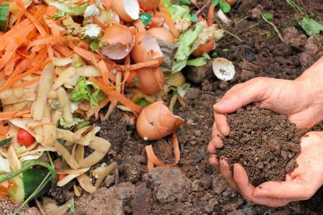

Food is also a very valuable resource for people all over the world since it is essential for life. However, like water, we tend to waste it a lot even if we don’t realize it. Did you know that we actually produce enough food to feed the population of the whole world. We even produce enough to feed 1.5x our current population but millions of people still suffer from malnutrition and go hungry each day. Provided some people suffer from overnutrition or they don’t get the right type of nutrients even if they eat enough.


Nevertheless, 815 million people around the world suffer from chronic undernourishment according to the United Nations Food & Agriculture Organization (FAO). So, where does all this extra food go? It becomes food waste. Here’s another fun fact for you. 1.3 billion tonnes of food waste is generated every year. That’s almost ⅓ of the total amount of food we produce yearly!
Can you see now why the issue of food waste is such a big matter? What can we do to help? One of the little but impactful ways we have to reduce food waste is to eat all of our food. If we can’t finish it right now, then save it for later! The little less food you buy by eating leftovers could instead
be donated to charities who help stop world hunger. Another thing you could do is plant fruits and vegetables in your backyard. Every little thing counts!
Apart from contributing to less food waste, this can also ensure that you eat fresh and healthy. Of course, generating food waste can’t really be avoided but we can all do our part in minimizing the amount we create. There’s also a way to make food waste reusable in a sense. We can make the food waste we have into compost so that we could use it as a fertilizer for plants. This would be a very healthy and environment-friendly alternative to using commercially-made fertilizers. Lastly, we could also donate to the charities who help to solve world hunger by establishing feeding programs and other ways. Let us all do our part in helping to save our fellow humans from hunger. Remember that every little thing that we do will matter. To a better future for humanity!

A global humanitarian organization that takes decisive action against the causes and effects of hunger. It does programs in 47 countries. It has helped more than 21 million children & their families in just the past year.
This organization aims to end hunger in our lifetime by providing food and life-saving aid to the world’s most vulnerable and by creating a global commitment to mobilize the necessary resources. It started in America then eventually branched off to the Philippines with big help from Stop Hunger Now Malaysia. It was also previously known as Stop Hunger Now (until 2017)
An organization that provides non-partisan policy analysis on hunger & strategies to end it. It has been educating opinion leaders, policy makers, & the public about hunger in the us and abroad since 1975.

About Bread for the World Institute. (2019, December 30). Retrieved January 7, 2020, from
https://www.bread.org/about-bread-world-institute.Action Against Hunger. (n.d.). Retrieved January 7, 2020, from
https://www.actionagainsthunger.org/.Akbari, M. Z. (2016, November 23). Unprecedented Food Crisis. Retrieved January 7, 2020, from
http://outlookafghanistan.net/topics.php?post_id=16745.Hickel, J. (2019, August 21). The Global Food Crisis Is Here. Retrieved January 7, 2020, from
https://foreignpolicy.com/2019/08/21/the-global-food-crisis-is-here/.Icon made by Freepik from
www.flaticon.comNutrition. (2015, December). Retrieved January 7, 2020, from
https://data.unicef.org/topic/nutrition/.Rise Against Hunger. (n.d.). Retrieved January 7, 2020, from
https://riseagainsthungerphilippines.org/.The Devasting Economics Behind Food Waste [INFOGRAPHIC]. (2017, May 30). Retrieved January 7, 2020, from
https://www.valuewalk.com/2017/06/food-waste/.Vivas, E. (2010, June 27). Food crisis: causes, consequences and alternatives. Retrieved January 7, 2020, from
https://climateandcapitalism.com/2010/06/27/food-crisis-causes-consequences-and-alternatives/./a>